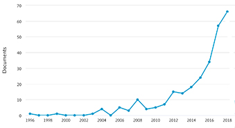

Sejnowski, Terrence J. The deep learning revolution Cambridge, MA: MIT Press, 2018. viii, 319 p. ISBN 978-0-262-03803-4. $29.95/£24.00.
To say that there is a burgeoning interest in deep (or machine) learning, is something of an understatement: the potential impact of this class of techniques in education, scientific research, health care, and business, is a constant topic in the news these days. Some idea of the growth of interest is given in this figure, which shows the number of documents dealing with deep learning and its impact on business retrieved from the Scopus database. A similar search on Google Scholar produced 1,290 documents, 349 of which had been published in the last two years, and the same search for news items on Google produced 8,760 items. If nothing else, then, this book would be timely!
Sejnowski is certainly well-placed to present the development and current state of deep learning: beginning as a physicist, he turned to bio-physics and, ultimately, to computational neurobiology, and is now holder of the Frances Crick Chair at the Salk Institute for Biological Studies - one of the most prestigious positions in academe. However, he has stronger credentials than simply position and prestige, having been one of a small team of researchers in the 1980s who believed that a neural network approach to artificial intelligence would be more successful than the then prevailing orthodoxy.
The book is divided into three sections: Part I, Intelligence reimagined, consisting of five chapters which tell the story of the emergence of neural network technology within the AI community; Part II, Many ways to learn, consisting of six chapters describing the evolution of the different forms of machine and neural learning systems; and Part III, Technological and scientific impact - seven chapters on the applications.
The target audience for the book is not specified; the author describes it as:
a personal view of key conceptual advances and community of researchers who made them. (p.viii)
and the focus on the community and the individuals who compose it, together with their achievements, makes the text readily accessible to the lay reader with an interest in science, although I imagine that specialists in the field will also find it a useful history.
What, then, is deep learning? A definition is provided in Chapter 1:
Deep learning is a branch of machine learning that has its roots in mathematics, computer science, and neuroscience. Deep networks learn from data the way that babies learn from the world around them, starting with fresh eyes and gradually acquiring the skills needed to navigate novel environments. (p. 3)
Deep learning is a variation within artificial intelligence: however, the difference is significant, in that the main focus of AI in the 1960s, 70s and 80s was on the development of computer programs to deal with specific problems. Deep learning, on the other hand, relies on the development of algorithms that, in a sense, mimic the way the human learns through the different senses. Its recent success is a consequence of a number of things, particularly the massive increase in computing power and the availability of huge amounts of data in different fields. Thus, Google has been able to employ deep learning in the development of its translation system, because it has massive amounts of textual data upon which to work and already has terabytes of translated text all the world's literary languages. Sejnowski points out that one of the advantages of deep learning is that the same algorithm can be used to deal with many problems, rather than a program needing to be written for every different problem.
As indicated by the reference above to Google Translate, deep learning is already employed in a number of fields: in addition to translation, it underlies the operations of the self-drive car (which I doubt will ever become completely accepted by human beings who like to drive!); it forms the basis of the speech recognition systems in, for example, Apple's Siri assistint and the Amazon Echo; it has show remarkable abilities in learning human games, such as Go; and it is used as a diagnostic tool in medicine, and in making money on the stock exchange.
There is, however, an interesting problem in deep learning, which the author explains as follows:
Although they may give the right answer to a problem, currently, there is no way to explain how neural networks arrive at that answer. (p. 123)
This limits their use in medicine, for example, because how do you know that the diagnosis arrived at is the correct one, if you cannot follow the logic of the decision-making process? We might say the same thing of the Go game: if you cannot fully understand how the machine manages to win, how can you teach those winning ways to humans? The author points out that the same thing is true of the human brain, in that we do not know how the brain 'draws inferences from experiences', but, on the other hand, the human being can at least attempt to explain how s/he arrives at a decision, and, in fields like medicine, it may be that man/machine partnerships will be the best outcome.
This is an altogether fascinating book: the focus on the personalities involved in the evolution of deep learning, together with the author's deep understanding of the field make it highly readable and any course in data science or artificial intelligence would benefit from having it on the reading list.
Professor T.D. Wilson
Editor-in-Chief
August, 2018
How to cite this review
Wilson, T.D. (2018). Review of: Sejnowski, Terrence J. The deep learning revolution Cambridge, MA: MIT Press, 2018 Information Research, 23(3), review no. R639 [Retrieved from http://informationr.net/ir/reviews/revs639.html]
Information Research is published four times a year by the University of Borås, Allégatan 1, 501 90 Borås, Sweden.